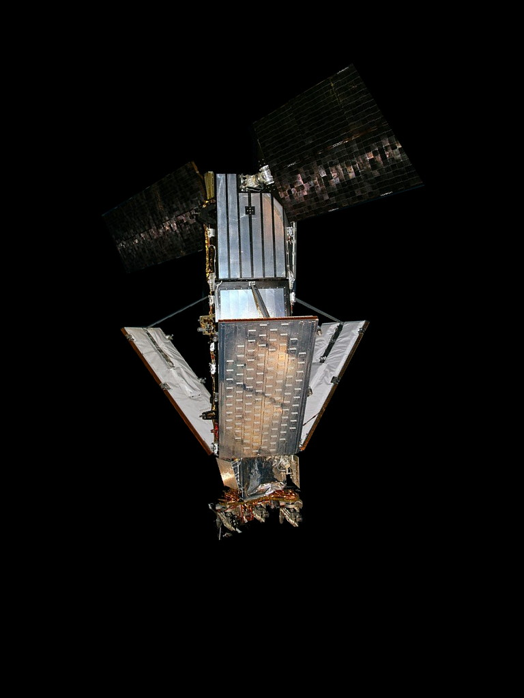

Debris info:
Name:
Country code:
Launch Date:
Mean Motion:
Inclination:
Period:
Catch
On February 10, 2009, two communications satellites—the active commercial Iridium 33 and the derelict Russian military Kosmos-2251—accidentally collided at a speed of 11,700 m/s and an altitude of 789 kilometres above the Taymyr Peninsula in Siberia. It was the first time a hypervelocity collision occurred between two satellites – until then, all accidental hypervelocity collisions had involved a satellite and a piece of space debris.By December 2011, many pieces of the debris were in an observable orbital decay towards Earth, and were expected to burn up in the atmosphere within one to two years. By January 2014, 24% of the known debris had actually decayed. In 2016, Space News listed the collision as the second biggest fragmentation event in history, with Kosmos-2251 and Iridium 33 producing respectively 1,668 and 628 pieces of catalogued debris, of which 1,141 and 364 pieces of tracked debris remain in orbit as of January 2016
